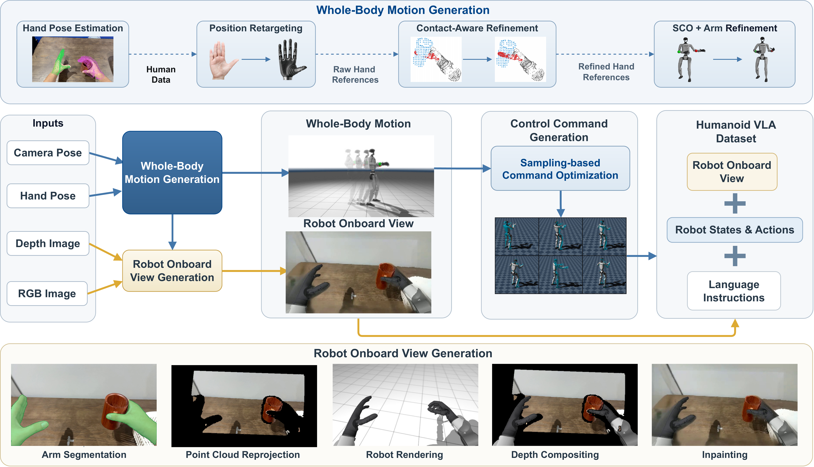

01 · CAPTURE
Observe the task
Record the human viewpoint, hand and head cues, and language goal with the demonstration.
Kinematics–Observation Data Alignment for Humanoid Learning from Human Egocentric Demonstration
Gamma Robotics · TeleAI · Project overview and data release preview


KODA closes the interface gap between what a person sees and does during a demonstration and what a humanoid controller needs at training time.
We align human visual observations, head and hand motion cues, robot states, compatible actions, and task language on one control clock. The result is a reusable data conversion layer that can supplement different target controllers without rebuilding the model prior from scratch.
The central design choice is to make the conversion explicit: every aligned record can be inspected from source observation through controller-specific actions.

Record the human viewpoint, hand and head cues, and language goal with the demonstration.
Map visual motion into robot motion and robot views while preserving the original task context.
Project states and actions onto the target controller’s compatible action space and control clock.
Combine KODA records with robot demonstrations to train a controller-specific whole-body VLA.
The clips below use the KODA data material from the project workspace. Each demo shows a paired human view and a robot-side execution or replay across the four G1 tasks evaluated with SONIC and HEFT.
Egocentric intent aligned with a whole-body reach and place.
Object transfer with synchronized hand and robot views.
Contact-rich action grounded in a controller-compatible trajectory.
Multi-step rearrangement with the task instruction retained.
KODA makes the data processing chain visible: source demonstrations become aligned records, then controller-specific training data.

Onboard RGB and the visual context available to the target policy.
Body joints, gravity, and hand state expressed in the target embodiment.
Commands projected into the controller’s action space for execution.
The language goal that keeps the record usable for instruction following.
Replace the author list and venue once the paper metadata is final.
@article{koda2026,
title = {KODA: Kinematics--Observation Data Alignment for Humanoid Learning},
author = {Shi, Jiyuan and the KODA Team},
year = {2026},
note = {Project page}
}